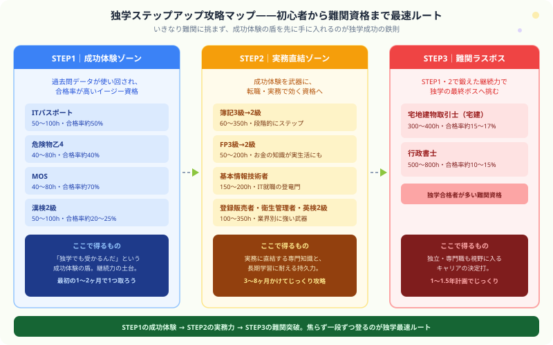

独学で取れる資格ランキング2026｜スクール不要・コスパ最強の国家資格まとめ
こんにちは、大谷です！「スクールに通うお金なんてない。でも、市販のテキストの独学だけで本当に合格できる資格ってどれなんだろう……」と悩んでテキストを検索した瞬間……「うわっ、なんじゃこりゃ、資格によって独学の難易度が違いすぎてどれを選べばいいか分からんわ！」とフリーズしていませんか？（笑）
毎日会計を猛勉強している僕の視点から、高額な授業料を1円も払わずに「市販の本と無料動画だけで確実に合格をもぎ取れる最強の12資格」を、ガチの本音主観で熱くナビゲートします！
また、記事の末尾のほうにある【いいねボタン】をポチッと押してもらえると、めちゃくちゃ励みになりますしすごく嬉しいです！それでは、一緒に見ていきましょう！
「スクールに通う時間も費用もない」「市販テキストだけで合格できる資格はどれ？」—— 本記事では独学合格者が多い資格を厳選してランキング形式で紹介します。難易度・勉強時間・費用の観点でコスパを徹底評価します。
独学に向いている資格の条件
- 過去問・公式テキストが充実している
- 合格率が20%以上（難易度がある程度把握しやすい）
- 試験範囲が明確に定められている
- 記述・論述より選択式が中心
- 無料の学習コンテンツ（公式動画・解説サイト）がある

独学おすすめ資格ランキングTOP12
ITパスポート最難易度低
勉強時間：50〜100時間｜合格率：約50%｜学習コスト：3,000〜5,000円
IPA公式サンプル問題が豊富で、完全独学が可能。就活・転職でのIT知識証明として広く認められている。CBT方式で通年受験可能。スタートの1冊として最適。
危険物取扱者（乙4）コスパ最強
勉強時間：40〜80時間｜合格率：約40%｜学習コスト：2,000〜3,000円
過去問が流用されることも多く、過去問集1冊での独学合格が定番。製造業・物流・ガソリンスタンドで資格手当が付きやすい。最短1〜2ヶ月での取得も可能。
FP3級→2級
勉強時間：50時間（3級）→150〜200時間（2級）｜合格率：3級70%・2級40%｜学習コスト：3,000〜8,000円
FP協会・金財の公式テキストと市販問題集で独学合格が可能。金融・保険の知識は副業・転職・自身の資産形成にも直結する実用性の高い資格。
日商簿記3級→2級
勉強時間：60〜100時間（3級）→200〜350時間（2級）｜合格率：3級40〜55%・2級20〜30%｜学習コスト：3,000〜8,000円
市販テキスト（TAC・とおるシリーズなど）が充実しており独学環境が整っている。3級→2級の順で進めるのが定番。経理・財務職への転職・副業フリーランス経理に使える。
宅地建物取引士（宅建）
勉強時間：300〜400時間｜合格率：約15〜17%｜学習コスト：5,000〜10,000円
不動産業界での転職・独立に必須の資格。毎年試験問題が公開され、過去問データが充実。市販テキスト（みんほし・わかって合格るシリーズなど）での独学合格者が多い。1年計画で独学合格を目指せる。
基本情報技術者（FE）
勉強時間：150〜200時間｜合格率：約40〜50%｜学習コスト：3,000〜6,000円
IPA公式の過去問・サンプル問題が豊富で独学に最適。「科目A」はひたすら過去問を解けば合格ライン到達が可能。「科目B」のアルゴリズムは集中的な練習が必要。IT系就職・転職の登竜門。
登録販売者
勉強時間：250〜350時間｜合格率：約40〜50%｜学習コスト：3,000〜6,000円
厚労省の試験問題・解答が公開されており独学環境が整っている。ドラッグストアでのパート・転職で活用しやすく、全国どこでも求人がある資格。約8ヶ月の独学計画が定番。
行政書士難しめ
勉強時間：500〜800時間｜合格率：約10〜15%｜学習コスト：8,000〜15,000円
難関資格の中では独学合格者が比較的多い資格。市販テキストのクオリティが高く（フォーサイト・TAC等）、1〜1.5年の独学計画が可能。ただし記述式問題の対策が難点。合格後は独立開業の道も。
衛生管理者（第一種・第二種）
勉強時間：100〜200時間｜合格率：約40〜55%｜学習コスト：3,000〜5,000円
過去問の使い回しが多く、過去問集1〜2冊の徹底学習で合格が狙える。50人以上の事業場で選任義務があり企業からの取得推薦も多い。短期集中の独学に向いている。
漢字検定（漢検）2級
勉強時間：50〜100時間｜合格率：約20〜25%｜学習コスト：2,000〜3,000円
漢検協会の公式問題集のみで合格できる典型的な独学向け資格。就活や転職への直接的な効果は限定的だが、履歴書に書けるコスパ良好な資格。秘書検定・MOSと並行して取得する人も多い。
MOS（Microsoft Office Specialist）
勉強時間：40〜80時間｜合格率：約70%｜学習コスト：3,000〜5,000円
Microsoft公式テキストと練習ソフトで独学が可能。事務職・派遣・パートの採用で評価される。特にExcel・Wordの上位資格（Expert）を取ると転職市場での評価が高い。
英検2級・準1級
勉強時間：100〜200時間（2級）｜合格率：約25〜30%（2級）｜学習コスト：3,000〜8,000円
英検公式問題集・過去問集での独学が可能。TOEICと違い「合否判定」がある資格のため、転職・就活での提示がしやすい。準1級以上は二次試験（面接）対策が必要。
独学コスパ比較表
| 資格 | 学習コスト | 勉強時間 | 合格率 | 転職・就職効果 |
|---|---|---|---|---|
| ITパスポート | 〜5,000円 | 50〜100h | 約50% | ★★★☆☆ |
| 危険物乙4 | 〜3,000円 | 40〜80h | 約40% | ★★★☆☆ |
| FP2級 | 〜8,000円 | 150〜200h | 約40% | ★★★★☆ |
| 簿記2級 | 〜8,000円 | 200〜350h | 約25% | ★★★★☆ |
| 宅建 | 〜10,000円 | 300〜400h | 約15% | ★★★★★ |
| 基本情報 | 〜6,000円 | 150〜200h | 約45% | ★★★★☆ |
| 行政書士 | 〜15,000円 | 500〜800h | 約12% | ★★★★★ |
独学が難しい資格（スクール推奨）
以下の資格は独学合格者がいないわけではありませんが、合格率・試験の性質上、スクールや通信講座の活用を推奨します。
- 公認会計士：3,000〜4,000時間の学習量、論文式の採点基準が複雑
- 司法書士：合格率2〜3%、独学での合格は相当な実力が必要
- 税理士（全科目）：5科目取得に5〜10年、科目ごとの専門性が高い
- 社会保険労務士：足切り制度があり、全科目を満遍なく仕上げる必要がある
スクールに頼らず、自分の力だけで未来を切り開く仲間へ
誰にも管理されない独学は、正直しんどい瞬間もあります。それでも「自分の力だけで結果を出す」と決めてこの記事を読んでくれたあなたは、もう十分に本気です。1冊のテキストと、今日開くその1ページが、数ヶ月後のあなたを確実に変えてくれます。同じ道を独学で戦う仲間として、心から応援しています！僕の毎日の執筆モチベーション維持のために、この下にある【いいねボタン】をポチッと押してもらえると、めちゃくちゃ嬉しいです！